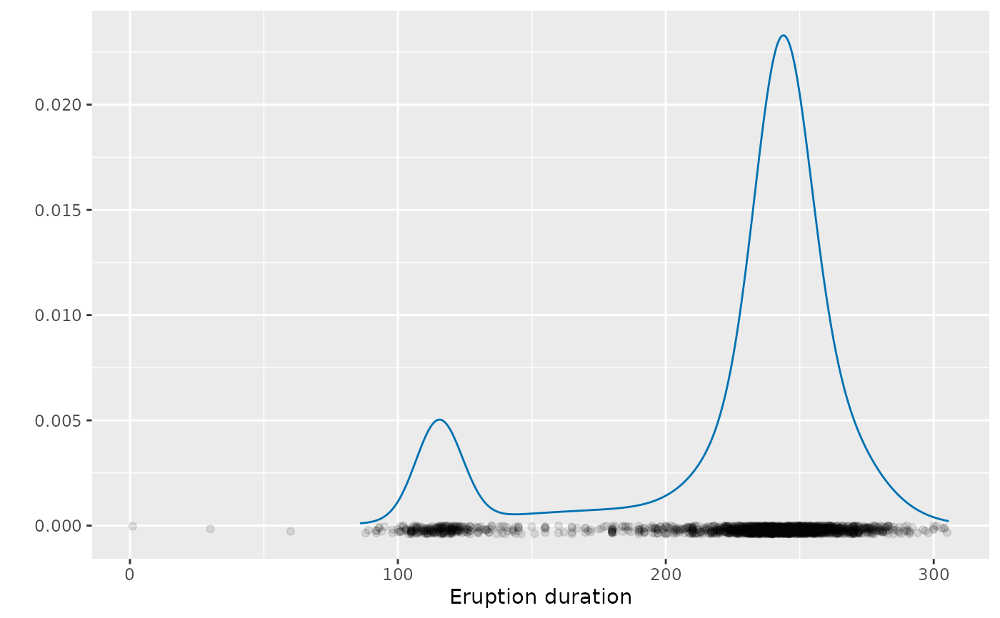

Convert Gaussian mixture model to a distributional object
Arguments
- object
Object of class
Mclust, output from the [mclust::Mclust] function
Examples
library(mclust)
#> Package 'mclust' version 6.1.2
#> Type 'citation("mclust")' for citing this R package in publications.
#>
#> Attaching package: ‘mclust’
#> The following object is masked from ‘package:dplyr’:
#>
#> count
# Univariate mixture density
gmm <- Mclust(oldfaithful$duration) |> dist_mclust()
gg_density(gmm) +
geom_jitter(data = oldfaithful, aes(x=duration, y = -0.0002),
width=0, height=0.0002, alpha = 0.1) +
labs(x = "Eruption duration", y = "")
